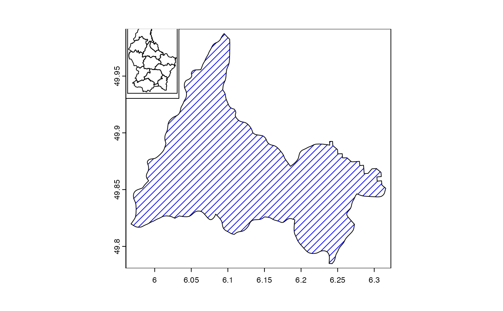
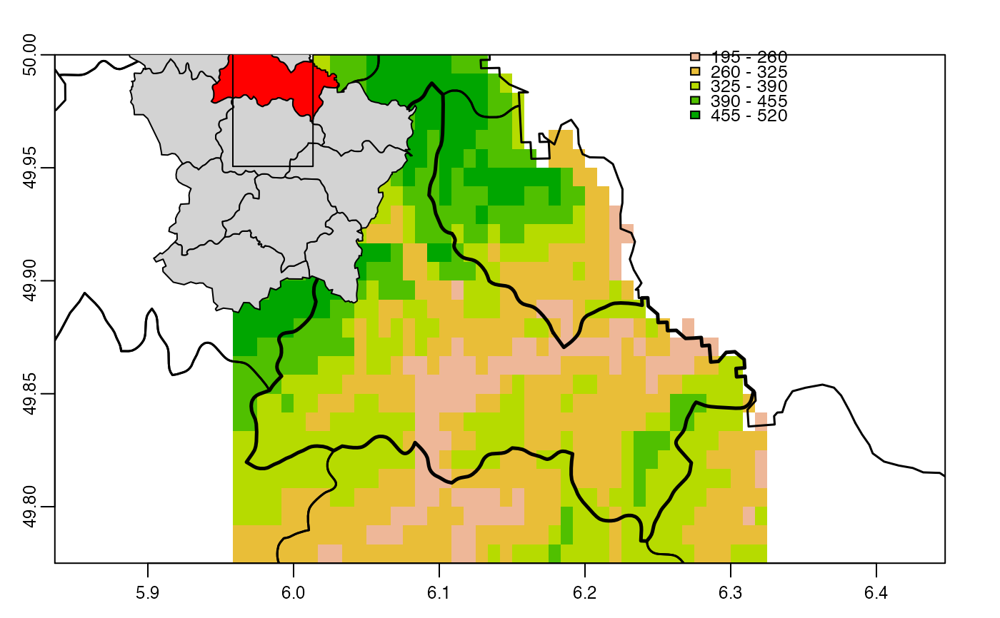
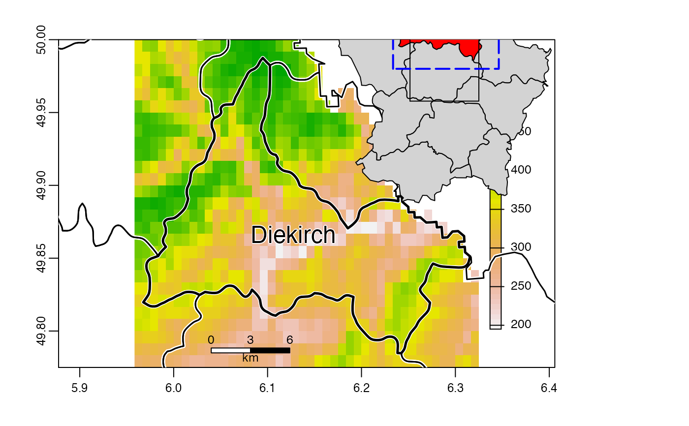
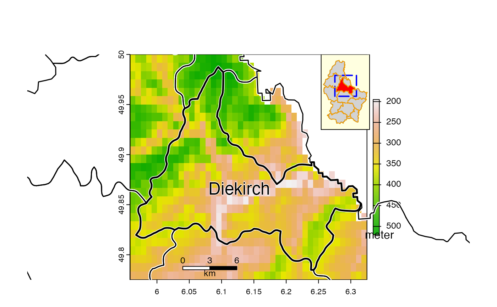

Make an inset map
inset.RdMake an inset map or scale the extent of a SpatVector
Usage
# S4 method for class 'SpatVector'
inset(x, e, loc="", scale=0.2, background="white",
perimeter=TRUE, box=NULL, pper, pbox, offset=0.1, add=TRUE, ...)
# S4 method for class 'SpatRaster'
inset(x, e, loc="", scale=0.2, background="white",
perimeter=TRUE, box=NULL, pper, pbox, offset=0.1, add=TRUE, ...)
# S4 method for class 'SpatVector'
inext(x, e, y=NULL, gap=0)Arguments
- x
SpatVector, SpatRaster
- e
SpatExtent to set the size and location of the inset. Or missing
- loc
character. One of "bottomright", "bottom", "bottomleft", "left", "topleft", "top", "topright", "right", "center"
- scale
numeric. The relative size of the inset, used when x is missing
- background
color for the background of the inset. Use
NAfor no background color- perimeter
logical. If
TRUEa perimeter (border) is drawn around the inset- box
SpatExtent or missing, to draw a box on the inset, e.g. to show where the map is located in a larger area
- pper
list with graphical parameters (arguments) such as
colandlwdfor the perimeter line- pbox
list with graphical parameters (arguments) such as
colandlwdfor the box (line)- offset
numeric. Value between 0.1 and 1 to indicate the relative distance between what is mapped and the bounding box
- add
logical. Add the inset to the map?
- ...
additional arguments passed to plot for the drawing of
x- y
SpatVector. If not NULL,
yis scaled based with the parameters forx. This is useful, for example, whenxrepresent boundaries, andypoints within these boundaries- gap
numeric to add space between the SpatVector and the SpatExtent
Examples
f <- system.file("ex/lux.shp", package="terra")
v <- vect(f)
x <- v[v$NAME_2 == "Diekirch", ]
plot(x, density=10, col="blue")
inset(v)

# more elaborate
plot(x, density=10, col="blue")
inset(v, col = "brown", border="lightgrey", perimeter=TRUE,
pper=list(col="orange", lwd=3, lty=2),
box=ext(x), pbox=list(col="blue", lwd=2))
cols <- rep("light grey", 12)
cols[2] <- "red"
e <- ext(c(6.2, 6.3, 49.9, 50))
b <- ext(x)+0.02
inset(v, e=e, col=cols, box=b)

# with a SpatRaster
ff <- system.file("ex/elev.tif", package="terra")
r <- rast(ff)
r <- crop(r, ext(x) + .01)
plot(r, type="int", mar=c(2,2,2,2), plg=list(x="topright"))
lines(v, lwd=1.5)
lines(x, lwd=2.5)
inset(v, col=cols, loc="topleft", scale=0.15)

# a more complex one
plot(r, plg=list(title="meter\n", shrink=.2, cex=.8))
lines(v, lwd=4, col="white")
lines(v, lwd=1.5)
lines(x, lwd=2.5)
text(x, "NAME_2", cex=1.5, halo=TRUE)
sbar(6, c(6.04, 49.785), type="bar", below="km", label=c(0,3,6), cex=.8)
s <- inset(v, col=cols, box=b, scale=.2, loc="topright", background="light yellow",
pbox=list(lwd=2, lty=5, col="blue"))
# note the returned inset SpatVector
s
#> class : SpatVector
#> geometry : polygons
#> dimensions : 12, 6 (geometries, attributes)
#> extent : 6.255333, 6.321333, 49.9348, 49.99657 (xmin, xmax, ymin, ymax)
#> source : lux.shp
#> coord. ref. : lon/lat WGS 84 (EPSG:4326)
#> names : ID_1 NAME_1 ID_2 NAME_2 AREA POP
#> type : <num> <chr> <num> <chr> <num> <int>
#> values : 1 Diekirch 1 Clervaux 312 18081
#> 1 Diekirch 2 Diekirch 218 32543
#> 1 Diekirch 3 Redange 259 18664
lines(s, col="orange")
